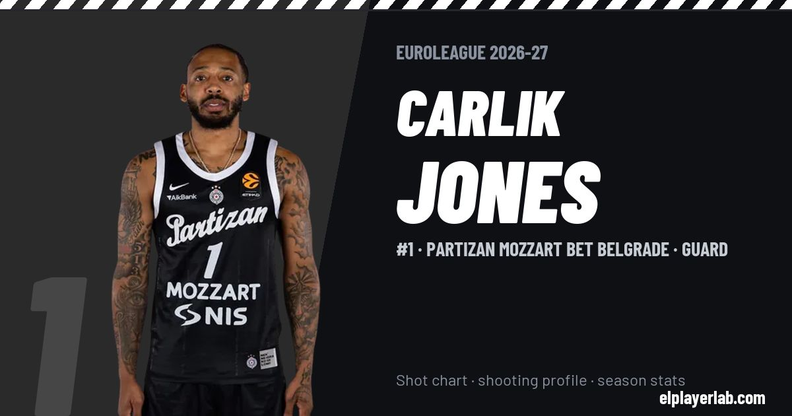

Partizan Mozzart Bet Belgrade · Euroleague 2026-27
Carlik Jones
#1 · Guard · Partizan Mozzart Bet Belgrade · 2026-27 · 2 games · 20.0 pts · 2.5 reb · 7.5 ast a game

- Number
- 1
- Position
- Guard
- Height
- 183 cm
- Weight
- 80 kg
- Born
- 1997-12-23
- Country
- United States of America
Career
- Partizan 2024-2027
- Zhejiang Golden Bulls 2023-2024
- Windy City Bulls (loan) 2022-2023
- Chicago Bulls (NBA) 2022-2023
- Denver Nuggets (NBA) 2021-2022
- Dallas Mavericks (NBA) 2021-2022
- Texas Legends 2021-2022
- Radford (NCAA) 2017-2020
Euroleague Player Lab: shot charts, shooting profiles and season stats for every player, rebuilt after every game.